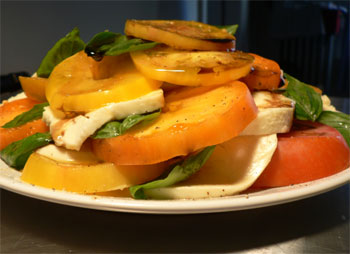

Dog days with Mom

We’re still technically on summer break here, but I get panicky at the sight of so much time passing without activity. Mom and I should be posting up a storm, since she’s here, staying at my apartment for a week and taking the artisanal bread class that I took last August. (It’s take-your-mother-to-work-week! Yay!) But anyone around New York will agree that it’s too damn hot. It’s too hot to even motivate oneself to go out to eat (we made that mistake last week and found every restaurant in a one-mile radius packed with other people too hot to cook).
So we’re spending our time trying to stay cool. As Poppy told me on the phone, “Son, managing your mother’s comfort is a full-time job.” Uncle Ted and I took her to the Chelsea Market for a few hours where we perused shop after shop, bought some Cream-Nut peanut butter, and drank fancy soda (I had my first Fentiman’s, and I’m pining for my second). I sent her to Loehmann’s one day to do some shopping while I took a dip in the West Village public pool. And we’ve spent plenty of time in the apartment, reading in front of the fan and the air conditioner. We might go to the movies one night, but that would involve navigating heat and crowds.
We’ve done a small bit of food preparation (it can’t really be called cooking). On Saturday, I cruised the Greenmarket (which is outstanding right now) for some tomatoes, mozzarella, and basil, and we had the caprese salad pictured above along with some corn from Sycamore farms that as sweet as sugar. On Sunday, Mom showed me her method for pesto, which involves lots of toasting of the various elements and then spreading them out to cool. It takes longer than my lazy way of just processing everything together, but the difference in flavor is substantial.
Tomorrow, I’m going to try to get her to the Spotted Pig for an early dinner, since she’s dying to have a Cuban sandwich and I bet theirs is phenomenal. She’ll deserve a treat after a second day in the hot bread kitchen, boiling bagels and loading baguettes into the blazing ovens.
Comments
Although it does not sound like an ideal place to spend a heatwave the bread class sounds interesting. I’m sure the heat in NYC is pretty brutal right now but I hope you both get a chance to enjoy the city despite the temperatures.
And, please, post the pesto recipe! (I’m just hoping the toasting is not done in the oven. If it is, I won’t be making it until September.)
What I wouldn’t give to dig into that insalata caprese – it looks heavenly!
Are those heirloom tomatoes?
The heat is unbearable enough where I am; all of the concrete there in NY must turn the city into a sweatbox. Be sure to stay hydrated!
I totally understand about it being too hot to cook, but it’s a shame we won’t be seeing posts more frequently, as the fresh summer bounty of vegetables is at its prime right now. Sometimes it takes a little hyping myself up to get up and really cook (as opposed to just making a meal to get by), but as soon as I am finished and am eating the sumptuous vegetables (that I bought from the farmers’ market), I am so grateful that I mustered up that last bit of energy to cook.
Ooh..artisanal bread baking..that sounds wonderful..Hope you are learning lots to post!
If you’re willing to brave the 7 train, the Cuban sandwich at El Sitio is unbeatable, and a cute, old-tymey atmo to boot…
Thanks, all, for your comments! Julie: maybe Mom will put up her pesto recipe soon. The things she does that I didn’t previously bother to do are to toast the nuts in a skillet and then let them cool, and to toast unpeeled cloves of garlic for a few minutes to take off their bitter edge, and then to let them cool as well.
Thanks, Sam! Yes, they are Greenmarket heirlooms, my August-September obsession.
We’ll try, Maria, we’ll try! The weather cooled off a bit, so I was able to make something last night.
IFC: Mom is gone, but I’ll try to get her out to Queens next time. Thanks for the tip!
Add a comment